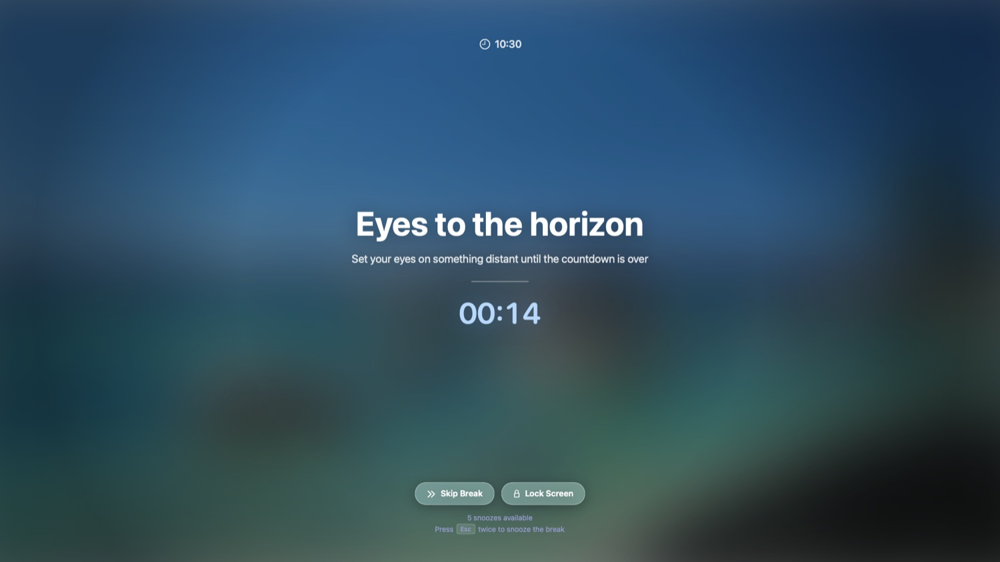

The Mac app
your eyes thank you for
Free, open-source break reminders that quietly look out for your screen habits.
- macOS 13+ · Apple Silicon
- Free & open source

👁
Fits your flow, not against it
Smart breaks
Work, short and long breaks on a cycle you set.
Heads-up warning
Snooze or skip before a break ever starts.
Smart Pause
Waits during calls, video, and fullscreen apps.
Planned breaks
Lunch and walks, on your own schedule.
Automations
Run Shell, AppleScript or Shortcuts on each break.
Break stats
A Screen Score, right in the menu bar.
⌘
Install
Homebrew
brew install --cask henryle97/tap/lookaroundUpgrade with brew upgrade --cask lookaround.
Direct download
- Download the
.dmgfrom the latest release. - Drag LookAround into Applications and launch it.